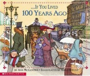
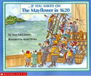
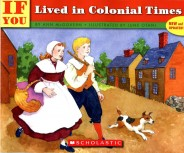
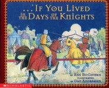

If You…Series

IF YOU LIVED 100 YEARS AGO
Imagine a time without computers and cell phones! 100 years ago, many children worked in factories and at home. They made clothing, artificial flowers, cigars, twine and boxes.

IF YOU SAILED ON THE MAYFLOWER IN 1620
Would you be able to keep clean? There were no bathrooms on the Mayflower. If you wanted to wash, you would wash in salty water from the sea. Most likely, you would wear the same clothes day after day.

IF YOU LIVED IN COLONIAL TIMES
Could you sit at the table for supper? No, you had to stand at the table all through the meal. When supper was good or bad you could not say so. You could not say a word. “Speak not” was the rule.

IF YOU GREW UP WITH ABRAHAM LINCOLN
You would live on the frontier where the woods were full of animals but not many people. What happened if you got sick? What was your “blab” school like?
IF YOU LIVED WITH THE SIOUX INDIANS
Would you live in the same place all the time? Why did you have two mothers and fathers? How did you learn not to cry? What was the bravest thing you could do? You’ll feel like a Sioux when you read this book.

IF YOU LIVED IN THE DAYS OF THE KNIGHTS
What was it like to live in a real castle? What did knights eat? How did you become a knight? How did you protect yourself? This fascinating book brings medieval times to life.
IF YOU LIVED WITH THE CIRCUS
What was it like to travel with a circus and learn to be an acrobat? What did you eat and where did you sleep? A fun look at life behind the big top.